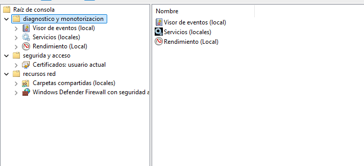
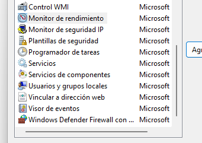
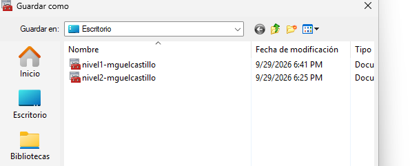

01
Abrir MMC
Ejecutamos mmc.exe /a para iniciar una consola vacía en modo autor.
Creación de dos consolas personalizadas de Microsoft Management Console para técnicos de soporte de Nivel 1 y Nivel 2, trabajando sobre el equipo local.
La actividad consiste en crear dos consolas MMC para administrar el equipo local desde dos perfiles de soporte diferentes: un técnico de Nivel 1 y otro de Nivel 2 .
Cada consola agrupa diferentes herramientas administrativas de Windows en función de las tareas que necesita realizar cada técnico.
MMC significa Microsoft Management Console .
Es el entorno de Windows que permite reunir distintas herramientas administrativas dentro de una misma consola.
Estas herramientas se incorporan mediante complementos o snap-ins .
Para crear una nueva consola personalizada, MMC se inicia en modo autor .
Una vez abierta la consola, podemos utilizar:
Ctrl + M → Agregar o quitar complementos
Ctrl + S → Guardar la consola
Ejecutamos mmc.exe /a para iniciar una consola vacía en modo autor.
Desde Archivo → Agregar o quitar complemento seleccionamos las herramientas necesarias.
Finalmente guardamos cada configuración como un archivo con extensión .msc.



Permite consultar los registros de Windows para analizar errores, advertencias, eventos del sistema, aplicaciones y seguridad.
Permite consultar, iniciar, detener y configurar los servicios que se ejecutan en Windows.
Muestra el hardware instalado y permite comprobar dispositivos, controladores y posibles errores de hardware.
Permite crear y administrar tareas que Windows ejecutará automáticamente en una fecha, hora o condición determinada.
Permite observar métricas y contadores relacionados con CPU, memoria, disco, red y otros recursos del sistema.
Permite administrar discos, particiones, volúmenes, letras de unidad y diferentes operaciones relacionadas con almacenamiento.
Permite consultar los recursos compartidos, las sesiones abiertas y los archivos que están siendo utilizados a través de la red.
Permite administrar reglas de entrada y salida y controlar las comunicaciones permitidas o bloqueadas por el firewall.
Permite consultar y administrar certificados digitales utilizados por usuarios, equipos y diferentes servicios de Windows.
Permite administrar las cuentas y grupos locales existentes en el equipo cuando la edición de Windows dispone de este complemento.
Permite consultar y administrar determinados aspectos de Windows Management Instrumentation, utilizado para gestión y monitorización del sistema.
Permite consultar y administrar el Trusted Platform Module, componente relacionado con funciones de seguridad y protección de claves criptográficas.
Herramienta administrativa relacionada con la definición y administración de políticas y mecanismos de autorización.
Permite analizar configuraciones de seguridad del sistema y compararlas con configuraciones definidas.
Permite incorporar determinados controles ActiveX compatibles dentro de una consola MMC.
Consola orientada a tareas de soporte y diagnóstico habituales, proporcionando acceso a las herramientas necesarias para realizar una primera intervención sobre el equipo.
Consola con herramientas adicionales para realizar tareas de diagnóstico, monitorización y administración más avanzadas sobre el sistema local.


| COMPLEMENTO | NIVEL 1 | NIVEL 2 | FUNCIÓN PRINCIPAL |
|---|---|---|---|
| Visor de eventos | ✓ | ✓ | Diagnóstico de eventos y errores |
| Servicios | ✓ | ✓ | Administración de servicios |
| Administrador de dispositivos | ✓ | ✓ | Hardware y controladores |
| Programador de tareas | ✓ | ✓ | Automatización de tareas |
| Carpetas compartidas | — | ✓ AVANZADO | Recursos compartidos y sesiones |
| Administración de discos | — | ✓ AVANZADO | Discos y particiones |
| Monitor de rendimiento | — | ✓ AVANZADO | Rendimiento del sistema |
| Firewall avanzado | — | ✓ AVANZADO | Seguridad de red |
| Certificados | — | ✓ AVANZADO | Certificados digitales |
Mediante Microsoft Management Console se han creado dos entornos de administración diferentes para los técnicos de soporte de Nivel 1 y Nivel 2.
La utilización de complementos permite personalizar las herramientas disponibles en cada consola y agruparlas dentro de una única interfaz de administración.
Finalmente, las configuraciones se han guardado como archivos .msc, permitiendo volver a abrir posteriormente cada consola personalizada.